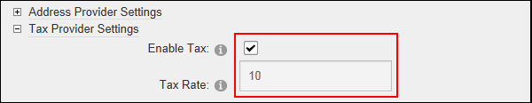
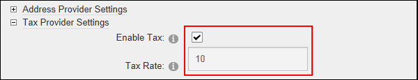

- Mark
 the check box to enable taxation.
the check box to enable taxation.- In the Tax Rate text box, enter the taxation rate as a percentage. E.g. 10

- Unmark
 the check box to disable taxation.
the check box to disable taxation.

How to enable and set or disable taxation for orders created using the Store module. This tutorial is for the default taxation provider. Taxation is added to an order when the customer proceeds to the checkout.
